Python is a computer programming language mostly used for website and software building, task automation, and data analysis. In this course, I used Python and its libraries to analyze datasets and create machine learning models.
Using Python libraries such as Seaborn and Matplotlib, I created various pairplots, heatmaps, histograms, and scatter plots analyzing correlation, relation,and trends in different columns (values for a certain variable or condition such as presence of a certain gas in the air.)
Seaborn is one way of visualizing data in Python, and is the only multivariate (meaning a dataset with multiple variables) form of data visulizations.
Matplotlib is another way of visualizing data in Python and can visualize both univariate (one variable) and bivariate (two variables) data.
Using both Seaborn and Matplotlib, I created two heatmaps. Heatmaps contain values represented by different colors for each value. In this case, each value is the correlation between two variables. The darkest colors represent a strong negative correlation and the lightest colors represent a strong positive correlation. Colors in the middle of the spectrum represent weak positive or weak negative correlations.
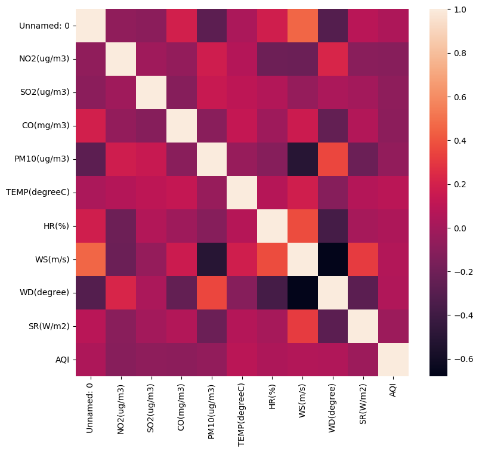Fig 1: unannotated heatmap using Seaborn and Matplotlib.
Fig 2: annotated heatmap using Seaborn and Matplotlib.
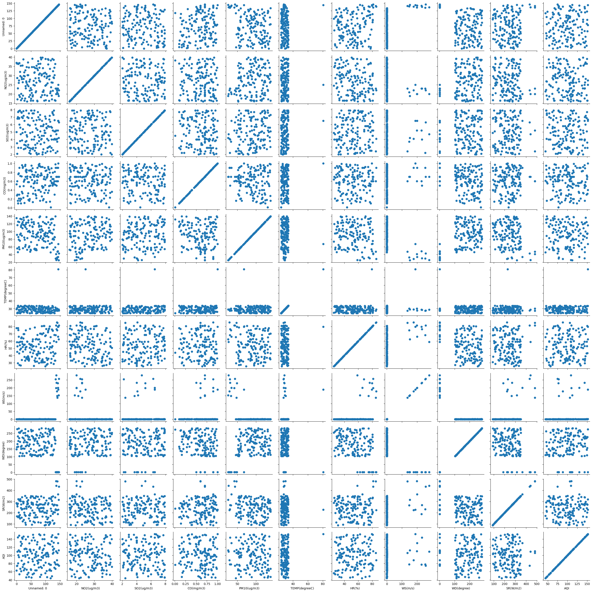Fig 3: Seaborn pairgrid (an example of multivariate data visulization using Seaborn).
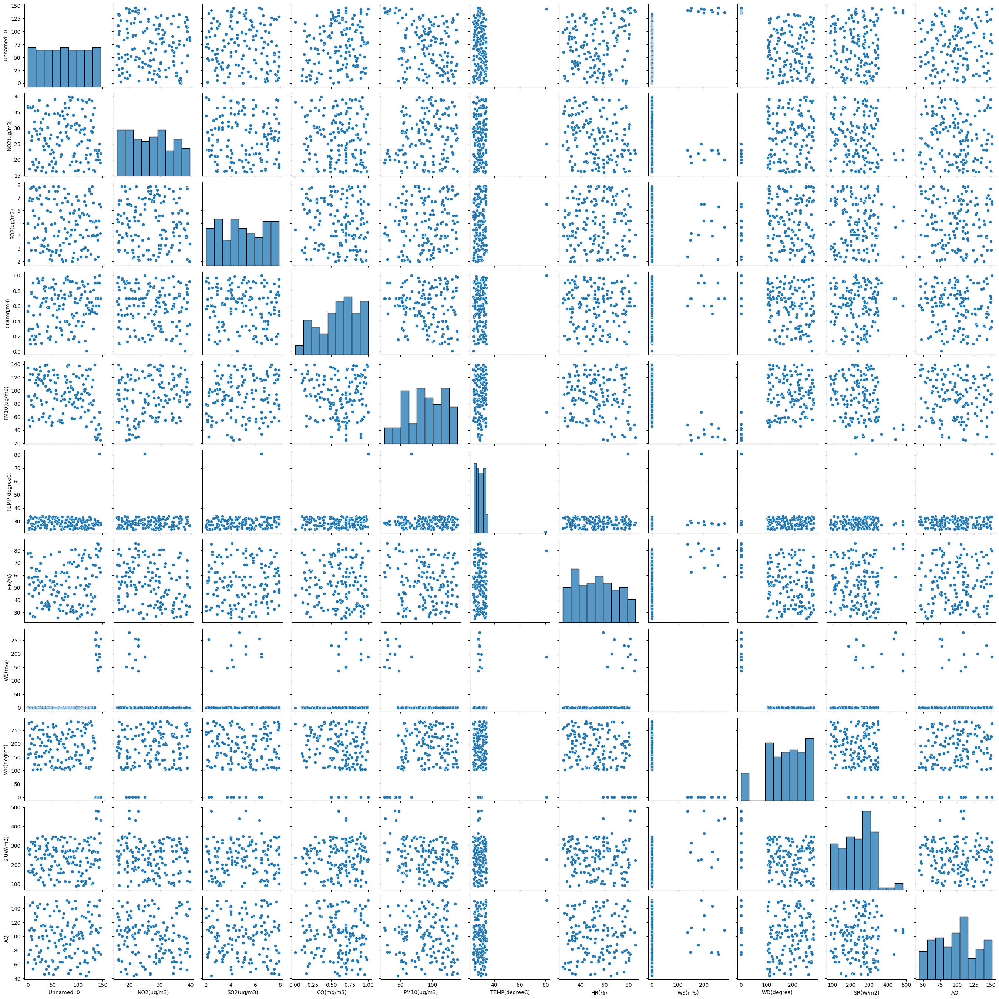Fig 4: Seaborn pairplot, version 1, showing histograms in the correlation between a variable and itself.
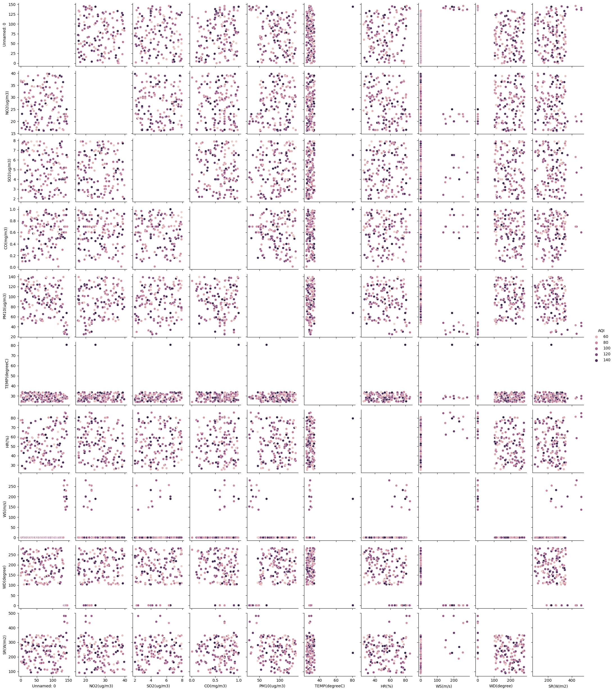Fig 5: Seaborn pairplot, version 2, with blank plots in the correlation between a variable and itself.
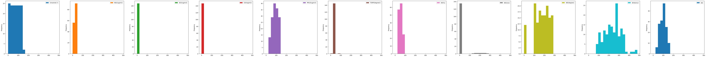Fig 6: Matplotlib histograms, showing trends of univariate data.
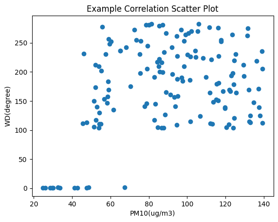Fig 7: Matplotlib scatter plot, showing the relationship between two variables.
Using Python as a coding language, Tensorflow - a machine learning platform, and different datasets, I created different machine learning models. A machine learning model is trained by feeding data into the computer program for the model, which uses the data to adjust its parameters and learn how to complete a task that the model is specifically created to complete. These tasks might be generating an image or text, or classifying an image. Machine learning models often include neural networks, which is a series of connected functions and parameters that adapt to different tasks.
Teachable Machine was the first machine learning model I experimented with. Teachable Machine is a classification model that decides which of a certain class (the original data fed into the machine) an image fits. I trained Teachable Machine to recognizeif a hand was making the motions for rock, paper, and scissors (as in the game Rock Paper Scissors), or neither. The model was exported to Google Colab to create a model that could recognize an image and play against a user.
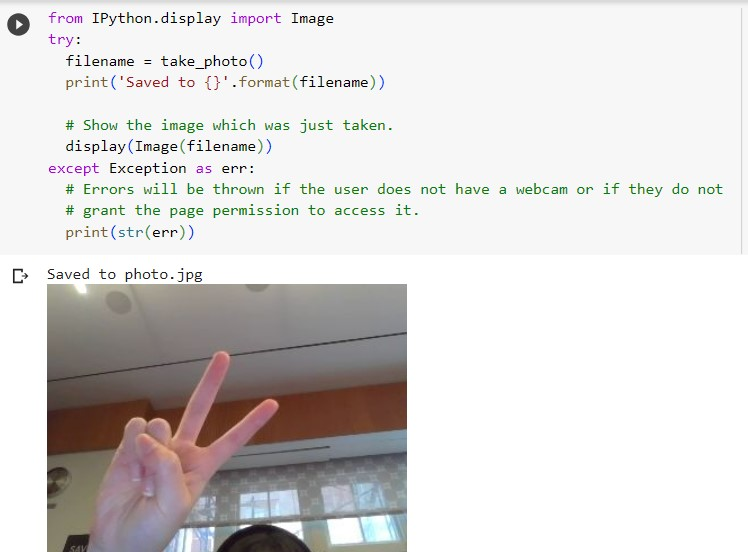Figs 8-10: Teachable Machine coding and results
The MNIST dataset is a set of images. These images are the handwritten numbers 0-9 in black and white. The model was trained to take an image input from the MNIST dataset and recognize which number it was, based on its previous training.
In addition to creating a densely connected model, which works best with extremely well-defined parameters and situations as seen in the MNIST dataset, I also created a convulutional neural network for the MNIST dataset. Convolution neural networks, or CNNs, are modeled after the thinking and recognition process of the human brain, and can extract more general information (with less defined problems) than a conventional model. \
The CIFAR dataset contains more general images than the MNIST dataset. These images are pictures of vehicles and animals, with the shape of the vehicle or animal blurred out. The model is trained to input the image, recognize the shape, and classify what the image is.
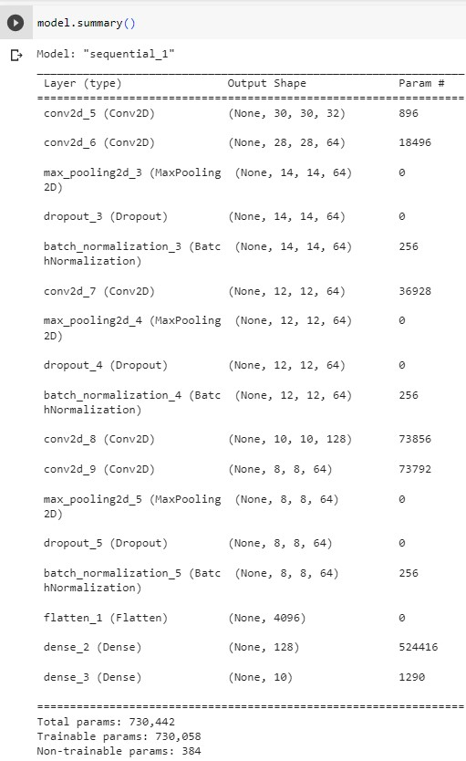Fig 11: CIFAR dataset model summary
A third neural network I created analyzed text sentiment in fake reviews for fictional products.
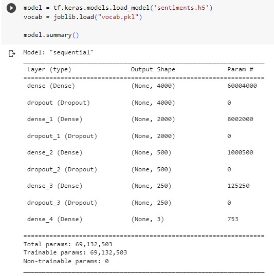Figs 12-14: Sentiment Analysis coding and prediction
Recurrent neural networks, or RNNs, can classify sequential data (such as text or video) using the context of the data. For example, if you were asked to tell which direction a ball would go in from a single image, you wouldn't. However, you would be able to tell which way the ball was going in if you were given a video of the ball being kicked through the air.
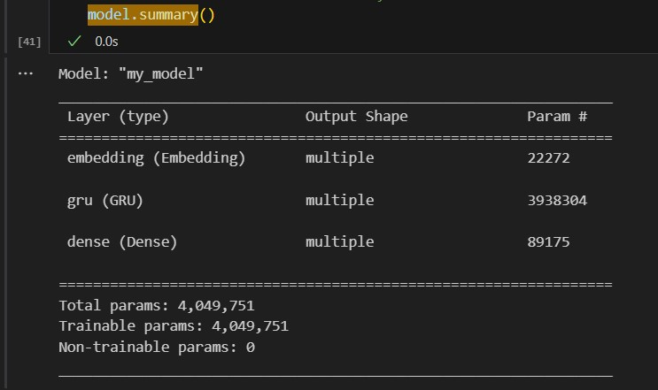Figs 15-19: RNN coding and generation
HTML is a markup language used to structure a web page and its content using elements. Elements are composed of opening tags, closing tags, and the content.
Opening tags contain the name of the element (for example, to make a new paragraph, the name of the element is p), contained in opening and closing angle brackets like this:
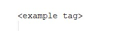Closing tags contain the name of the element with a forward slash before the element name, and are also wrapoped in angle brackets, like this:
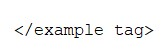The content is what the opening and closing tags format, such as text.
Together, an element looks like this:
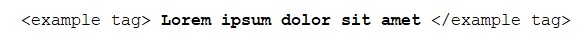You can also "nest" elements together. For example, you can emphasis a certain word in text by adding an emphasis element around the word, with the whole sentence contained by the paragraph element.
CSS is a style sheet language used to style web content. With CSS, you can make text different colors or fonts, add background images or colors, or display content in a certain way.
Using my knowledge of HTML and CSS, I designed this website, among others.